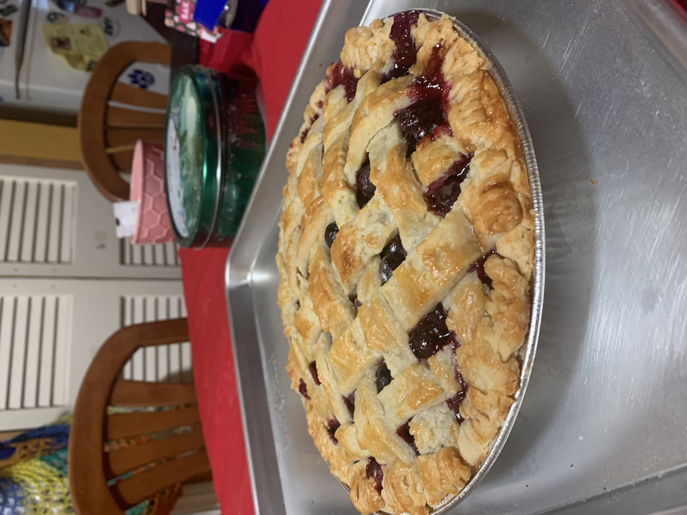
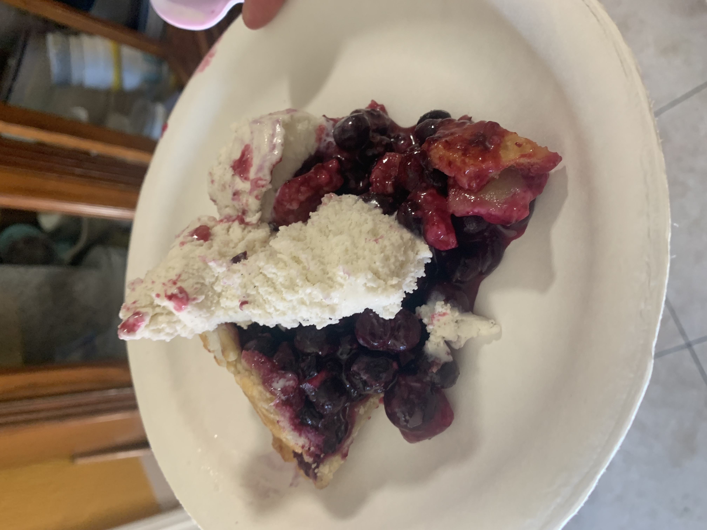

Blueberry Pie

Description
Another yummy pie and my favorite so far! This was the first pie I ever made from scratch so the recipe is beginner friendly although it may seem very overwhelming at times. This pie is very sweet with hints of tartness, it was a smash hit for thanksgiving and was devoured almost instantly! It was so good that I saved some slices and drove to my friends places to hand them out!
Ingredients
- Two piecrusts
- 6 cups of fresh blueberries
- 2/3 cup granulated sugar
- 1/4 cup all-purpose flour
- 2 Tablespoons cornstarch
- 1/4 Teaspoon ground cinnamon
- 2 Tablespoons lemon juice
- 1 Teaspoon lemon zest
- 1 Tablespoon cubed unsalted butter
- Egg wash: 1 egg beaten with 1 Tablespoon milk
- A sprinkle of course sugar
Steps
- In a mixing bowl, combine blueberries, sugar, flour, cornstarch, ground cinnamon, lemon juice and zest. Be sure to mix thoroughly until not dry/powdery. You may need to burst a few blueberries to moisten.
- Preheat oven to 425F
- Prepare bottom pie crust onto pie dish
- Add filling to pie dish and add cubed butter evenly ontop
- Lattice top pie crust and coat thoroughly with eggwash
- Sprinkle top with course sugar as desired
- Bake at 425F for 25 minutes
- Add pie shield and reduce temperature to 375F and bake for 50 more minutes
- Remove pie and let cool for 4 hours before serving!


Back to recipes